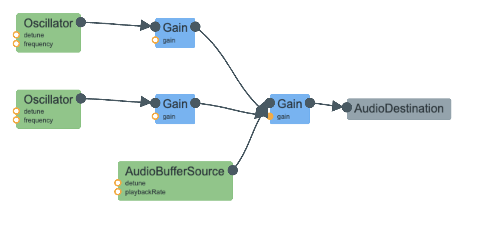

Pru Yontrarak, Computational Sound Final, Fall 2023
In my final project, I integrated the Web Audio API to create a dynamic musical experience linked to a cellular automata canvas. Using elements like ADSR envelopes, oscillators, AM synthesis, filters, and more, I designed various sound and chords. The interplay of sounds dictates the color, opacity, and speed of cells in the cellular automata, accompanied by a melody synchronized with automata movements playing over chords.
I chose to incorporate the following sounds: bouncing, ocean waves, crickets, and wind. To tackle most of these sounds, I referred to Farnell's "Designing Sound Part IV: Practicals." Here is a brief explanation of these 4 sounds and their audio signal flow graph generated from the WebAudio plugin from Chrome:
Bouncing: I used FM synthesis where frequency of the modulator modulates the frequency of the carrier. With each time it is played, the sound decreases to mimic a ball's gradual smaller bounces.
Ocean: Starting off with a brown noise, I then connected two LFO's that would overlap each other. This allowed me to create periodic waveforms that sounds like ocean waves moving back and forth.
Crickets: The chirping of crickets starts with a brown noise. Adding in a gain node, I used a very high-frequency oscillator to achieve the pitch. I then added a phasor to control the rate at which the cricket chirps before incorporating in AM synthesis.

Wind: To create wind sounds, I started off with a white noise. I then filtered this white noise using both a band pass filter and a high pas filter. After filtering the sounds, I clipped the sounds, resulting in a more controlled and realistic representation of wind sounds.
After making these sounds, I also made major and diminished chords as well as notes that would play with the chords, controlled by the movement of the cellular automata. Each of the chords has a different oscillator types / waveform shapes.
With the sounds perfected, I seamlessly integrated them into a user-friendly interface, allowing users to toggle sounds on and off. The addition of an amplitude-adjusting slider (top row) allows user to adjust the gain node for each sound, and cellular automata speed-adjusting slider (bottom row). Together, these two features allow the user to overlay sounds and create unique compositions.
Now lets explore more on the cellular automata.
The way cellular automata works is through a discrete mathematical model with a grid of cells. The cells evolve over time depending a set of rules:
- if a live cell has fewer than 2 live neighbors, it dies;
- if a live cell has more than 3 live neighbors, it dies;
- if a dead cell has exactly 3 live neighbors, it becomes alive;
- if neither of those 3 conditions are true, the cell remains in its current state.
And here is the cellular automata running without any connections to sound! Click to start it over again.
Drawing inspiration from pre-written cellular automata code exemplified in this website, I crafted the basic structure of one.
In order to connect the cellular automata to the sounds, I did the following:
- The colors of the cellular automata are connected to the sounds, allowing each sound to produce a different colored cells. That way, when the sounds are overlaid with each other, there could be new sounds created.
- The amplitude of each individual sound (bouncing, ocean waves, crickets, and wind) allows the opacity of the cells to change; when a particular sound has a higher amplitude, the cells become more opaque and when a particular sound has a higher amplitude, the cells become more transparent.
- The amplitude of the sounds (bouncing, ocean waves, crickets, and wind) together changes how fast the cells grow and die. In other words, if you turn on every single sound and move the sliders to the far right, increasing the amplitude to the max, the cells would be going through their growth and death process extremely quickly.
- An increase in the number of buttons toggled increases the size of the cells.
- When one of the chords' buttons (bottom row) are toggled, notes are played that are dependent on the speed at which the cells grow and die. The speed is determined by the slider provided.
Here is an example of my code running!
Click here for the video.Thank you for reading and enjoy this project!